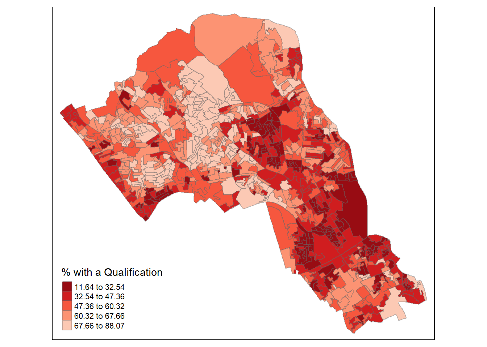
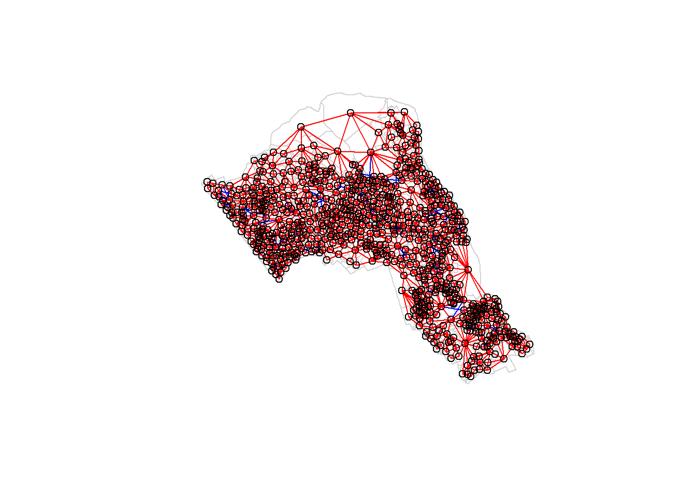
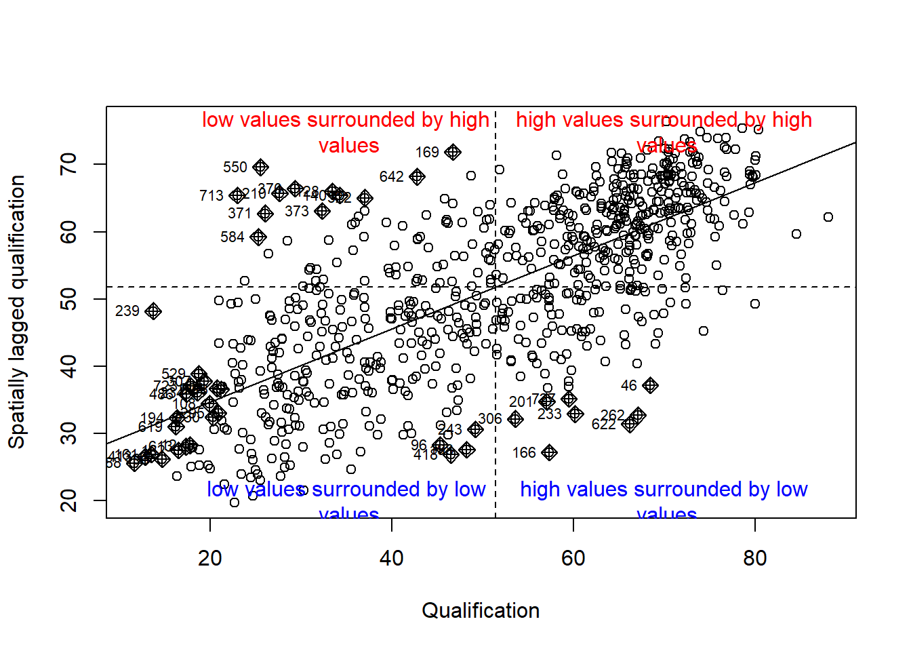
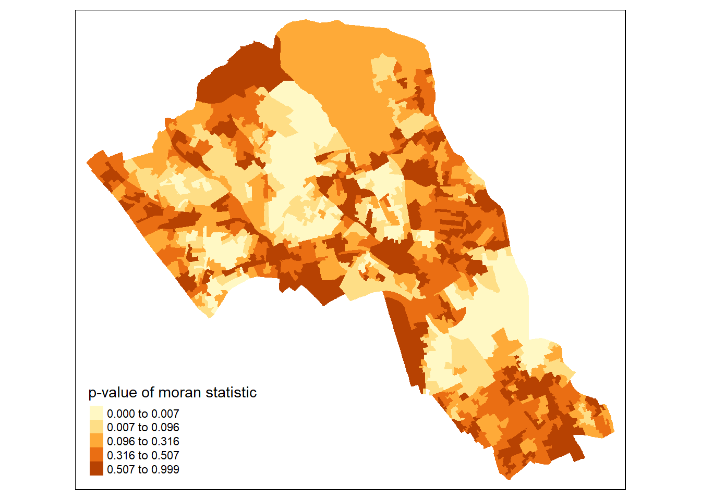
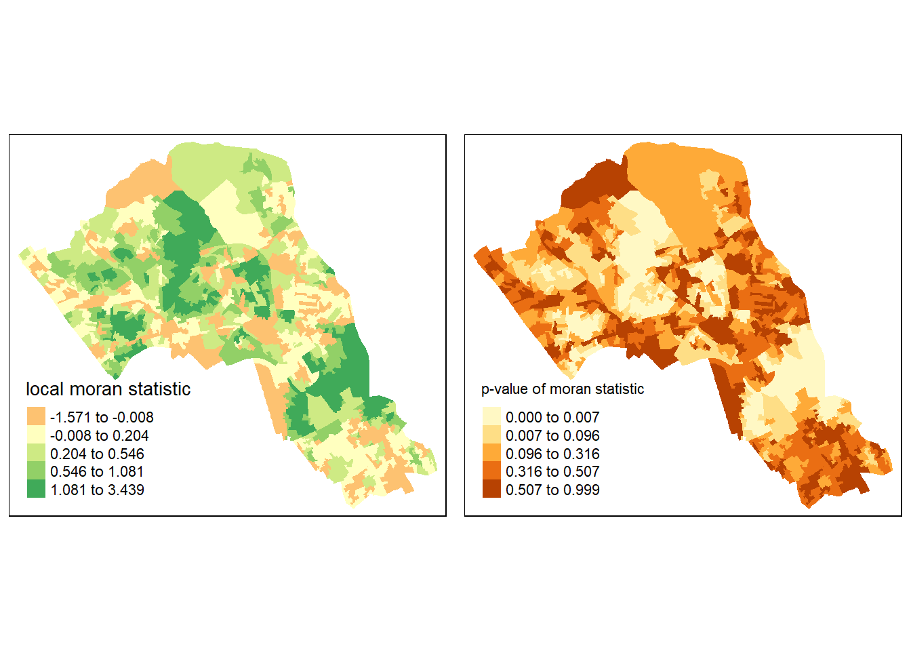
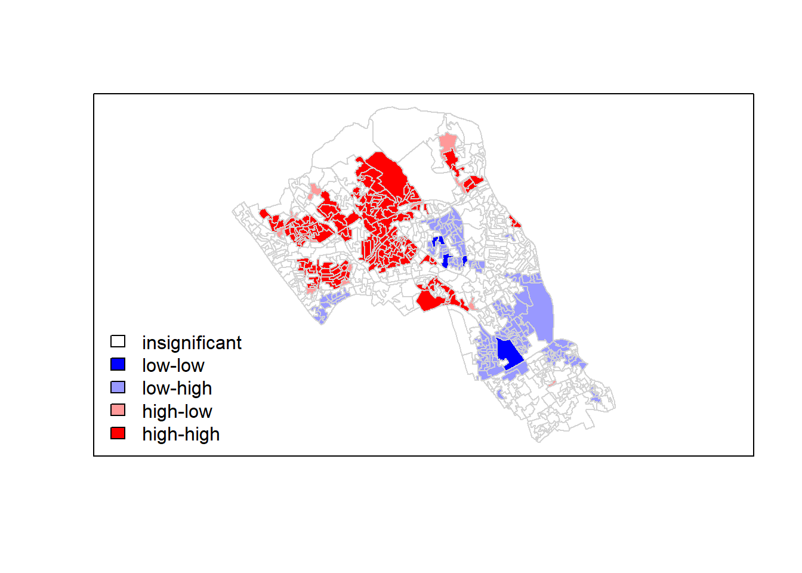
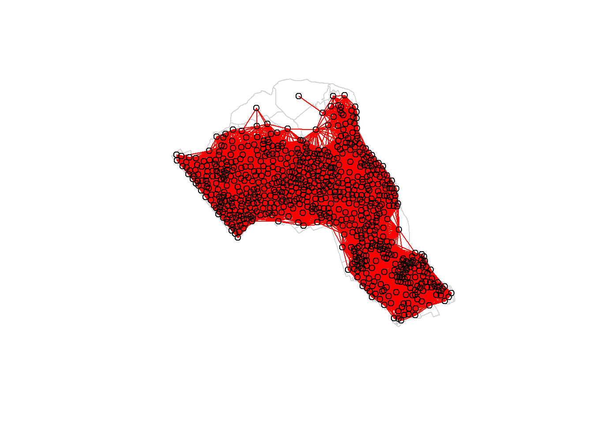
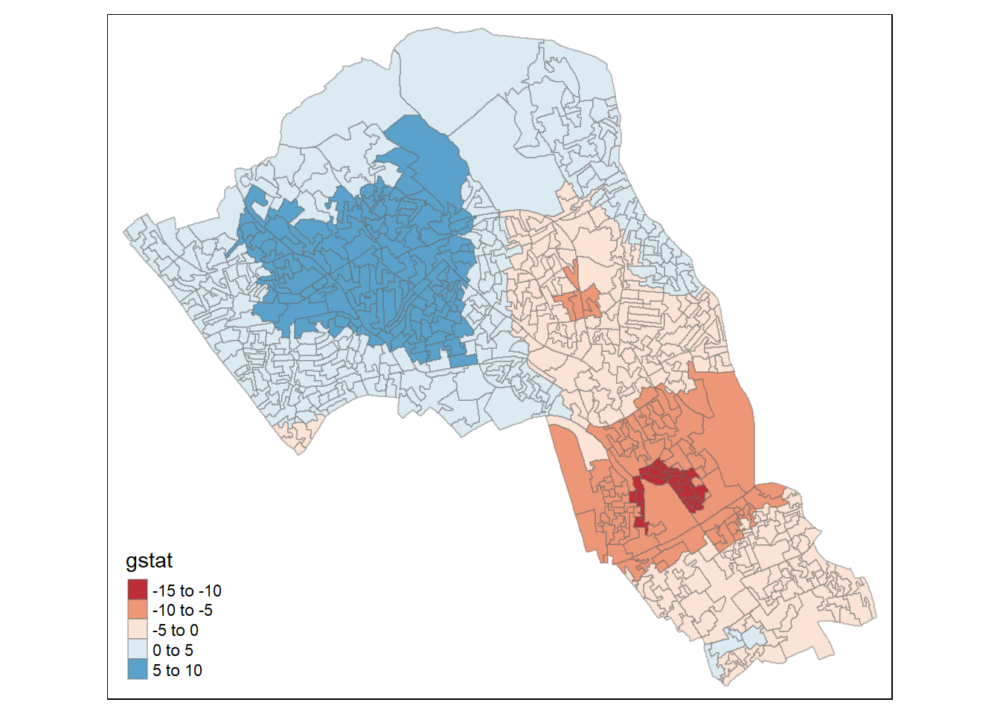

Analysis of trend: Spatial autocorrelaton
This practical will cover how to run various measures of spatial autocorrelation in R. We will consider both statistics of global spatial autocorrelation and how to identify spatial clustering across our study area.
Data & library set-up
rm(list=ls(all=TRUE))
library(rgdal)
Census.Data <-read.csv("./data/practical_data.csv")
Output.Areas <- readOGR("./data/Camden_oa11.shp")## Warning in OGRSpatialRef(dsn, layer, morphFromESRI = morphFromESRI, dumpSRS =
## dumpSRS, : Discarded datum OSGB_1936 in Proj4 definition: +proj=tmerc +lat_0=49
## +lon_0=-2 +k=0.9996012717 +x_0=400000 +y_0=-100000 +ellps=airy +units=m +no_defsHouse.Points <- readOGR("./data/Camden_house_sales.shp")## Warning in OGRSpatialRef(dsn, layer, morphFromESRI = morphFromESRI, dumpSRS =
## dumpSRS, : Discarded datum OSGB_1936 in Proj4 definition: +proj=tmerc +lat_0=49
## +lon_0=-2 +k=0.9996012717 +x_0=400000 +y_0=-100000 +ellps=airy +units=m +no_defsMerge census data with the shapefile.
OA.Census <- merge(Output.Areas, Census.Data, by.x="OA11CD", by.y="OA")We will be working to view the distribution of the qualification variable. We can first map it to see its spatial distribution across our study area.
library(tmap)
tm_shape(OA.Census) + tm_fill("Qualification", palette = "-Reds", style = "quantile", title = "% with a Qualification") + tm_borders(alpha=.4) ## Warning in sp::proj4string(obj): CRS object has comment, which is lost in output
Spatial autocorrelation
Spatial autocorrelation measures how distance influences a particular variable. In other words, it quantifies the degree of which objects are similar to nearby objects. Variables are said to have a positive spaital autocorrelation when similar values tend to be nearer together than dissimilar values.
Waldo Tober’s first law of geography is that “Everything is related to everything else, but near things are more related than distant things.” So we would expect most geographic phenomena to exert a spatial autocorrelation of some kind. In population data this is often the case as persons of similar characteristics tend to reside in similar neighbourhoods due to a range of reasons including house prices, proximity to work places and cultural factors.
We will be using the spatial autocorrelation functions available from the spdep package. So load the package.
library(spdep) Defining neighbourhood
In order for the spatial autocorrelation models to work, we need to work out what polygons neighbour each other. The following code will calculate neighbours for our OA.Census polygon and print out the results below. We will use poly2nb function which builds a neighbours list based on regions with contiguous boundaries, that is sharing one or more boundary point.
neighbours <- poly2nb(OA.Census)
neighbours## Neighbour list object:
## Number of regions: 749
## Number of nonzero links: 4342
## Percentage nonzero weights: 0.7739737
## Average number of links: 5.797063We can plot the links between neighbours to visualise their distribution across space.
plot(OA.Census, border = 'lightgrey')
plot(neighbours, coordinates(OA.Census), add=TRUE, col='red')
We can also use another approach of determining neighbours termed as the Rook’s case neighbours (neigbours with direct contact to a cell or polygon except the diagonals).
#see https://gis.stackexchange.com/questions/172998/queen-vs-rook-neighborhood
neighbours2 <- poly2nb(OA.Census, queen = FALSE)
neighbours2## Neighbour list object:
## Number of regions: 749
## Number of nonzero links: 4176
## Percentage nonzero weights: 0.7443837
## Average number of links: 5.575434We can already see that this approach has identified fewer links between neighbours. By plotting both neighbour outputs we can interpret their differences.
plot(OA.Census, border = 'lightgrey')
plot(neighbours, coordinates(OA.Census), add=TRUE, col='blue')
plot(neighbours2, coordinates(OA.Census), add=TRUE, col='red')
We can represent spatial autocorrelation in two ways; globally or locally. Global models will create a single measure which represent the entire data whilst local models let us explore spatial clustering across space.
Global spatial autocorrelation
With the neighbours defined. We can now run a model. First we need to convert the neighbours object to a list. This file will be used to determine how the neighbours are weighted.
listw <- nb2listw(neighbours2)
listw## Characteristics of weights list object:
## Neighbour list object:
## Number of regions: 749
## Number of nonzero links: 4176
## Percentage nonzero weights: 0.7443837
## Average number of links: 5.575434
##
## Weights style: W
## Weights constants summary:
## n nn S0 S1 S2
## W 749 561001 749 285.3793 3113.982We can now run the model. This type of model is known as a Moran’s test. This will create a correlation score between -1 and 1. Much like a correlation coefficient, 1 depicts perfect positive spatial autocorrelation (so our data is clustered), 0 identifies the data is randomly distributed and -1 represents negative spatial autocorrelation (so dissimilar values are next to each other).
moran.test(OA.Census$Qualification, listw)##
## Moran I test under randomisation
##
## data: OA.Census$Qualification
## weights: listw
##
## Moran I statistic standard deviate = 24.292, p-value < 2.2e-16
## alternative hypothesis: greater
## sample estimates:
## Moran I statistic Expectation Variance
## 0.5448699398 -0.0013368984 0.0005055733The Moran I statistic is 0.54, we can therefore determine that there our qualification variable is positively autocorrelated in Camden. In other words, the data does spatially cluster. We can also consider the p-value as a measure of the statistical significance of the model.
Local spatial autocorrelation
We will first create a Moran plot which looks at each of the values plotted against their spatially lagged values. A spatially lagged variable is a weighted sum or a weighted average of the neighbouring values for that variable. It basically explores the relationship between the data and their neighbours as a scatter plot. The style refers to how the weights are coded. “W” weights are row standardised (sums over all links to n).
moran <- moran.plot(OA.Census$Qualification, listw = nb2listw(neighbours2, style = "W"), xlab = "Qualification", ylab = "Spatially lagged qualification")
text(70, 20, "high values surrounded by low\n values", col="blue")
text(70, 75, "high values surrounded by high\n values", col="red")
text(35, 75, "low values surrounded by high\n values", col="red")
text(35, 20, "low values surrounded by low\n values", col="blue")
Is it possible to determine a positive relationship from observing the scatter plot?
local <- localmoran(x = OA.Census$Qualification, listw = nb2listw(neighbours2, style = "W"))By considering the help page for the localmoran function (run ?localmoran in R) we can observe the arguments and outputs. We get a number of useful statistics from the model which are as defined:
| Name | Description |
|---|---|
| Ii | local moran statistic |
| E.Ii | expectation of local moran statistic |
| Var.Ii | variance of local moran statistic |
| Z.Ii | standard deviate of local moran statistic |
| Pr() | p-value of local moran statistic |
First we will map the local moran statistic (Ii). A positive value for Ii indicates that the unit is surrounded by units with similar values. Therefore, combine the results with the polygon shapefile,
moran.map <- cbind(OA.Census, local)then map the variable Ii.
map1 <- tm_shape(moran.map) + tm_fill(col = "Ii", style = "quantile", title = "local moran statistic")
print(map1)## Warning in sp::proj4string(obj): CRS object has comment, which is lost in output## Variable(s) "Ii" contains positive and negative values, so midpoint is set to 0. Set midpoint = NA to show the full spectrum of the color palette.
From the map it is possible to observe the variations in autocorrelation across space. We can interpret that there seems to be a geographic pattern to the autocorrelation. However, it is not possible to understand if these are clusters of high or low values.
Why not try to make a map of the P-value to observe variances in significance across Camden? Use names(moran.map@data) to find the column headers.
map2 <- tm_shape(moran.map) + tm_fill(col = "Pr.z...0.", style = "quantile", title = "p-value of moran statistic")
print(map2)## Warning in sp::proj4string(obj): CRS object has comment, which is lost in output
Or better we can compare the local moran statistic with the significant values side by side.
library(grid,gridExtra)
library(gridExtra)
grid.newpage()
pushViewport(viewport(layout=grid.layout(1,2)))
print(map1, vp=viewport(layout.pos.col = 1, layout.pos.row =1))## Warning in sp::proj4string(obj): CRS object has comment, which is lost in outputprint(map2, vp=viewport(layout.pos.col = 2, layout.pos.row =1))## Warning in sp::proj4string(obj): CRS object has comment, which is lost in output
We could also try to create a map which labels the features based on the types of relationships they share with their neighbours (i.e. high and high, low and low, insignificant, etc.). The following code will run this for you. Source: Brunsdon and Comber (2015)
### to create LISA cluster map ###
quadrant <- vector(mode="numeric",length=nrow(local))
# centers the variable of interest around its mean
m.qualification <- OA.Census$Qualification - mean(OA.Census$Qualification)
# centers the local Moran's around the mean
m.local <- local[,1] - mean(local[,1])
# significance threshold
signif <- 0.1
# builds a data quadrant
quadrant[m.qualification >0 & m.local>0] <- 4
quadrant[m.qualification <0 & m.local<0] <- 1
quadrant[m.qualification <0 & m.local>0] <- 2
quadrant[m.qualification >0 & m.local<0] <- 3
quadrant[local[,5]>signif] <- 0
# plot in r
brks <- c(0,1,2,3,4)
colors <- c("white","blue",rgb(0,0,1,alpha=0.4),rgb(1,0,0,alpha=0.4),"red")
plot(OA.Census,border="lightgray",col=colors[findInterval(quadrant,brks,all.inside=FALSE)])
box()
legend("bottomleft",legend=c("insignificant","low-low","low-high","high-low","high-high"),fill=colors,bty="n")
It is apparent that there is a statistically significant geographic pattern to the clustering of our qualification variable in Camden.
Getis-Ord: hot-spot detection
Another approach we can take is hot-spot analysis. The Getis-Ord Gi Statistic looks at neighbours within a defined proximity to identify where either high or low values cluster spatially. Here statistically significant hot-spots are recognised as areas of high values where other areas within a neighbourhood range also share high values too.
First, we need to define a new set of neighbours. Whilst the spatial autocorrection considered units which shared borders, for Getis-Ord we are defining neighbours based on proximity.
# creates centroid and joins neighbours within 0 and x units
nb <- dnearneigh(coordinates(OA.Census),0,800)
nb_lw <- nb2listw(nb, style = 'B')
# plot the data and neighbours
plot(OA.Census, border = 'lightgrey')
plot(nb, coordinates(OA.Census), add=TRUE, col = 'red')
Plot the data and neighbours.
plot(OA.Census, border = 'lightgrey')
plot(nb, coordinates(OA.Census), add=TRUE, col = 'red')
With a set of neighbourhoods established we can now run the test and bind the results to our polygon file.
On some machines the cbind function may not work with a spatial data file, in this case you will need to change OA.Census to OA.Census@data so that R knows which part of the spatial data file to join. If you take this approach the subsequent column ordering may be different to what is shown in the example below. First compute Getis-Ord Gi statistic,
local_g <- localG(OA.Census$Qualification, nb_lw)
local_g <- cbind(OA.Census, as.matrix(local_g))
names(local_g)[6] <- "gstat"
# map the results
tm_shape(local_g) + tm_fill("gstat", palette = "RdBu", style = "pretty") + tm_borders(alpha=.4)## Warning in sp::proj4string(obj): CRS object has comment, which is lost in output## Variable(s) "gstat" contains positive and negative values, so midpoint is set to 0. Set midpoint = NA to show the full spectrum of the color palette.
then map the results.
tm_shape(local_g) + tm_fill("gstat", palette = "RdBu", style = "pretty") + tm_borders(alpha=.4)## Warning in sp::proj4string(obj): CRS object has comment, which is lost in output## Variable(s) "gstat" contains positive and negative values, so midpoint is set to 0. Set midpoint = NA to show the full spectrum of the color palette.
The Gi Statistic is represented as a Z-score. Greater values represent a greater intensity of clustering and the direction (positive or negative) indicates high or low clusters. The final map should indicate the location of hot-spots across Camden.
Exercise
Class exercise: Repeat this for another variable in the data or use your own data.